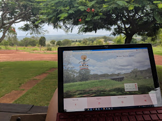
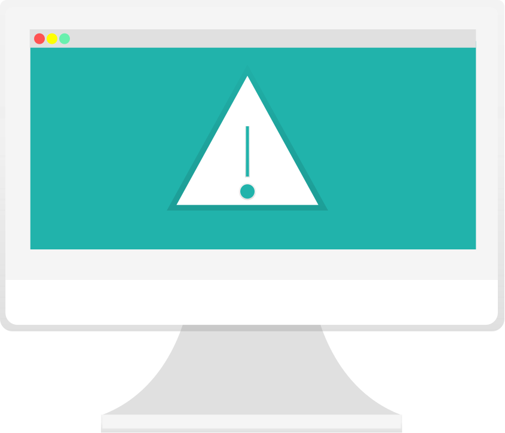
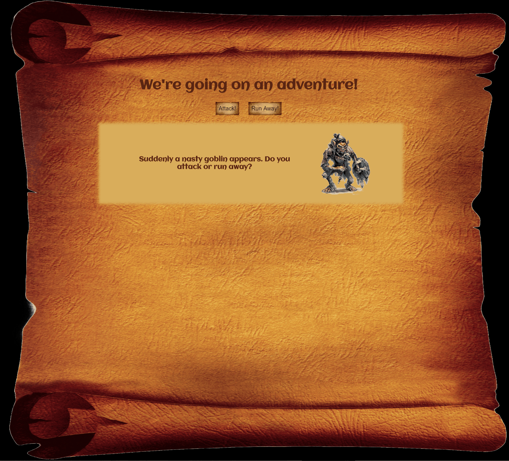

The Art of Failure

Engineering Mechanics 100
Engineering Maths 140
Engineering Graphics 232
Strength of Materials 232
Thermodynamics 236
Mechanical Design 238
I probably shouldn't be studying Engineering
I failed. And that's ok.



Learn


Failure

So Failure is Good?
Fail Fast, Fail Often


Failure isn't one size fits all
It's ok to not be ok
You

People


Support your Team
Embrace Failure